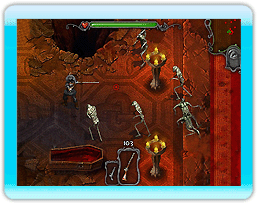

Introduzione
Sei un cacciatore di vampiri? Sei pronto a combattere contro legioni di non-morti come zombi, ghoul, lupi mannari e altro ancora?
Dovrai padroneggiare un arsenale di armi eccezionali con astuzia e abilità. Scatena una devastante potenza di fuoco con |
 |
mitragliatrici e lanciafiamme e non dimenticarti... la sega elettrica. Scegli i potenziamenti per le tue armi e i bonus per il tuo personaggio man mano che i nemici crescono in numero e in ferocia!
E fai attenzione... Il Conte Dracula è sempre assetato di sangue e questa volta... vuole TE!
In questo gioco il telecomando Wii è utilizzato in posizione verticale.
Puntatore:
Lo scopo di nemici si avvicina.
Bonus (Perk):
Utilizzare il pulsante A per attivare un Bonus (o il pulsante A sul controller per Nintendo GameCube).
Spara:
Utilizzare il pulsante B per sparare (usare il Stick C sul controller per Nintendo GameCube o lo stick destro sul controller tradizionale). Sparerai con l'arma attualmente equipaggiata.
Arma successiva:
Utilizzare il pulsante Z o il pulsante R sul controller tradizionale e sul controller per Nintendo GameCube per selezionare l'arma successiva.
Arma precedente:
Utilizzare il pulsante C o il pulsante L sul controller tradizionale e sul controller per Nintendo GameCube per selezionare l'arma precedente.
Pause:
Utilizzare la pulsantiera + o il pulsante START/PAUSE sul controller per Nintendo GameCube per mettere in pausa il gioco.
Movimento:
Utilizzare il Control Stick sul Nunchuk, lo stick sinistro sul controller tradizionale o il Control Stick sul controller per Nintendo GameCube per muovere il personaggio.
*Nota: questo gioco supporta la funzione di rumble. Per attivarla o disattivarla sul telecomando Wii, accedi alla schermata del menu HOME. Per il controller per Nintendo GameCube, accedi al menu delle opzioni all'interno del gioco.